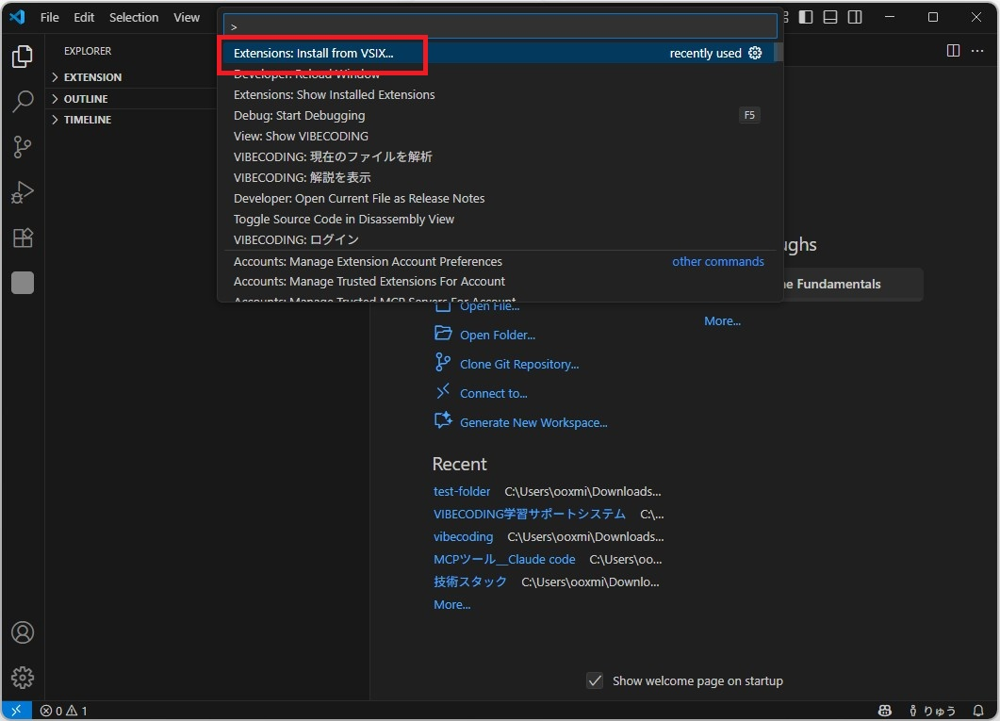

拡張機能をダウンロード
VSIXファイルをダウンロード
上の青いボタン「拡張機能をダウンロード」をクリックして、VSIXファイルをダウンロードします。
ファイル名: vibecoding-extension-0.2.0.vsix
サイズ: 約 110 KB
保存先: ブラウザのデフォルトダウンロードフォルダ（通常は「ダウンロード」フォルダ）
[NEW] 新機能: 全言語対応・非エンジニア向け解説機能搭載
ダウンロードが完了したら、ファイルの場所を覚えておいてください。次のステップで使用します。
ダウンロード確認
以下のチェックリストで確認してください：
-
.vsix拡張子のファイルがダウンロードされている
-
ファイルサイズが約101 KBである
-
ファイルの保存場所を把握している
VSCodeにインストール
VSCodeを起動
Visual Studio Code（VSCode）を起動してください。VSCodeがインストールされていない場合は、公式サイトからダウンロードしてください。
任意のフォルダを開いている、または新規ウィンドウでも構いません
コマンドパレットを開く
VSCodeでコマンドパレットを開きます。以下のキーボードショートカットを使用してください：
Mac: ⌘ + Shift + P
VSCodeのすべての機能にアクセスできる検索ボックスです。画面上部に表示されます。
画面上部に検索ボックスが表示されます
インストールコマンドを検索
コマンドパレットに以下のテキストを入力してください：
「vsix」または「拡張機能」と入力するだけで、該当するコマンドが表示されます。完全に入力する必要はありません。
「Extensions: Install from VSIX...」という英語のコマンドも同じ機能です。日本語版・英語版どちらを選んでも構いません。
候補が表示されたら、拡張機能: VSIX からのインストール...を選択してEnterを押してください。
「拡張機能: VSIX からのインストール...」を選択
VSIXファイルを選択
ファイル選択ダイアログが開きます。ステップ1でダウンロードしたvibecoding-extension-0.1.0.vsixファイルを探して選択してください。
通常、ダウンロードフォルダに保存されています：
- Windows: C:\Users\ユーザー名\Downloads
- Mac: /Users/ユーザー名/Downloads
- Linux: /home/ユーザー名/Downloads
ファイルを選択したら、「開く」または「インストール」ボタンをクリックしてください。
vibecoding-extension-0.1.0.vsix を選択
インストール完了を待つ
VSCodeが自動的に拡張機能をインストールします。画面右下に進捗状況が表示されます。
「拡張機能 'VIBECODING' が正常にインストールされました。」というメッセージが表示されたら成功です！
画面右下に成功メッセージが表示されます
VSCodeをリロード（必要に応じて）
拡張機能によっては、VSCodeのリロードが必要な場合があります。メッセージが表示された場合は「Reload Now」または「今すぐ再読み込み」をクリックしてください。
メッセージが表示されない場合でも、念のためリロードすることをお勧めします：
Mac: ⌘ + R
拡張機能を起動
インストールとリロードが完了したら、VIBECODINGを起動しましょう。
1. VSCodeの左サイドバー（アクティビティバー）にあるVIBECODINGの白い四角形アイコンをクリック
2. 学習パネルが開き、ウェルカム画面またはログイン画面が表示されます
左サイドバーの白い四角形アイコンをクリックして起動
学習パネルが開いたら、VIBECODINGの起動は成功です！次のセクションで初期設定を行いましょう。
以下を確認してください：
- VSCodeを完全に再起動（閉じて再度開く）
- 拡張機能ビュー（Ctrl + Shift + X）で「VIBECODING」を検索し、「有効」になっているか確認
初期設定
拡張機能が表示されているか確認
左サイドバーにVIBECODINGのアイコンが表示されているか確認してください。
VSCodeの左端に縦に並んでいるアイコンバー（アクティビティバー）に、VIBECODINGの白い四角形アイコンが追加されています。
左サイドバーの白い四角形アイコンをクリック
以下を試してください：
- VSCodeを完全に再起動（閉じて再度開く）
- 拡張機能ビュー（Ctrl + Shift + X）で「VIBECODING」を検索し、有効になっているか確認
ログイン
VIBECODINGアイコンをクリックすると、学習パネルが開きます。初めて使用する場合は、ログイン画面が表示されます。
「新規登録」タブをクリックして、新しいアカウントを作成できます。
Webダッシュボードからも登録・ログイン可能：
TECHSTARS学習プラットフォームにアクセスして、Webブラウザから登録・ログインすることもできます。学習履歴やダッシュボードもこちらで確認できます。
設定を確認・調整
必要に応じて設定を調整できます。設定を開くには：
Mac: ⌘ + ,
設定画面で「VIBECODING」と検索すると、以下の設定項目が表示されます：
API URL
バックエンドAPIのURL。デフォルトは本番環境です。
解説レベル
beginner（初心者）/ intermediate（中級）/ advanced（上級）から選択。
タイムアウト
APIリクエストのタイムアウト時間（デフォルト: 10分）。
監視フォルダ
自動解析するフォルダを指定。
初めて使用する場合は、デフォルト設定のままで問題ありません。使いながら必要に応じて調整してください。
使い方
コードを解析する（基本）
VIBECODINGでコードを解析する最も簡単な方法：
解説が生成されると、VIBECODINGパネルに以下の情報が表示されます：
- コードの概要（サマリー）
- 詳細な解説
- 複雑度スコア
- 重要な概念
ファイル全体を解析する
ファイル全体を一度に解析することもできます：
ファイルが大きい場合、解析に時間がかかることがあります。タイムアウト設定を長めに設定することをお勧めします。
フォルダを監視して自動解析
Claude Codeなどでコードを生成する際、特定のフォルダを監視して自動的に解析できます：
自動解析は設定で有効になっている場合のみ機能します。設定画面で「Vibecoding: Auto Analyze」がオンになっているか確認してください。
解析履歴を確認
過去に解析したコードの履歴を確認できます：
履歴は最大10件まで保持されます。古い履歴は自動的に削除されます。
パネルを更新
最新の情報を取得するには、パネルを更新できます：
更新すると、以下の情報が最新化されます：
- 解析履歴
- 最近の変更
- 監視フォルダ一覧
トラブルシューティング
解決策：
- VSCodeを完全に再起動してください（ウィンドウを閉じて再度開く）。
- 拡張機能ビュー（Ctrl + Shift + X）で「VIBECODING」を検索。
- 「無効」になっている場合は「有効にする」をクリック。
- それでも表示されない場合は、拡張機能を一度アンインストールして再インストールしてください。
原因： バックエンドAPIにログインしていない状態です。
解決策：
- VIBECODINGパネルを開く。
- 「ログイン」ボタンをクリック。
- メールアドレスとパスワードを入力してログイン。
- アカウントを持っていない場合は「新規登録」タブから作成。
原因： コードが長すぎる、またはサーバーの制限（Render無料プランは30秒）に達している可能性があります。
解決策：
- コードを分割して解析： ファイル全体ではなく、一部分ずつ選択して解析してください。
- タイムアウト設定を延長： 設定画面で「Vibecoding: Request Timeout」を長めに設定（最大60000ms = 1分）。ただし、サーバー側の制限は変わりません。
- 再試行： サーバーが初回起動中の場合、2回目以降は速くなります。もう一度実行してみてください。
原因： バックエンドサーバーに接続できない状態です。
解決策：
- インターネット接続を確認： ネットワークに接続されているか確認してください。
- API URLを確認： 設定画面で「Vibecoding: Api Url」が正しいか確認（デフォルト: https://techstars.onrender.com）。
- サーバーの状態を確認： バックエンドサーバーが起動しているか確認してください（管理者に問い合わせ）。
解決策：
- VIBECODINGパネルが開いているか確認してください（左サイドバーのVCアイコンをクリック）。
- 「解説」セクションを展開してください（▼ボタンをクリック）。
- 開発者ツール（Ctrl + Shift + I）のConsoleタブでエラーを確認してください。
- パネル右上の「[RELOAD] 更新」ボタンをクリックして再読み込みしてください。
現在サポートされている言語：
手順：
- 拡張機能ビュー（Ctrl + Shift + X）を開く。
- 「VIBECODING」を検索。
- 歯車アイコン[CONFIG]をクリック → 「アンインストール」を選択。
- VSCodeをリロードまたは再起動。
よくある質問（FAQ）
料金プラン:
- テックスターズAI契約者: 最初の2ヶ月は無料、3ヶ月目から月額5,500円（税込）
- 一般ユーザー: 月額5,500円（税込）
すべてのプランで、AIによるコード解説、学習履歴管理、自動解析機能などの全機能をご利用いただけます。
Claude Codeでコードを生成する際、生成先のプロジェクトフォルダをVIBECODINGの監視フォルダに追加してください。ファイルが保存されると自動的に解析が始まります。
いいえ、VIBECODINGはクラウドベースのAI解析を使用しているため、インターネット接続が必要です。
はい、解析したコードはセキュアに送信され、APIサーバーで処理されます。詳細はプライバシーポリシーをご確認ください。
GitHubリポジトリのIssuesセクションに報告してください。詳細な情報（エラーメッセージ、再現手順など）を含めていただけると助かります。
追加情報
学習プラットフォーム
TECHSTARS学習プラットフォームで、学習履歴やダッシュボードにアクセスできます。コードの解析結果、進捗状況、統計情報などをWebブラウザで確認・管理できます。
コミュニティ
質問や議論はコミュニティフォーラムでお願いします。
アップデート情報
新機能や改善はCHANGELOG.mdで確認できます。
コントリビュート
オープンソースプロジェクトです。GitHubでコントリビュートできます。
VIBECODINGを使って、AIが生成したコードを理解し、プログラミングスキルを向上させましょう！